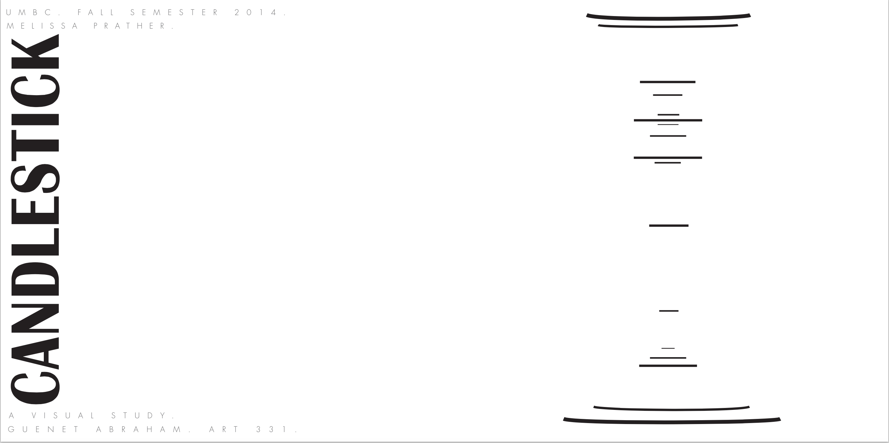
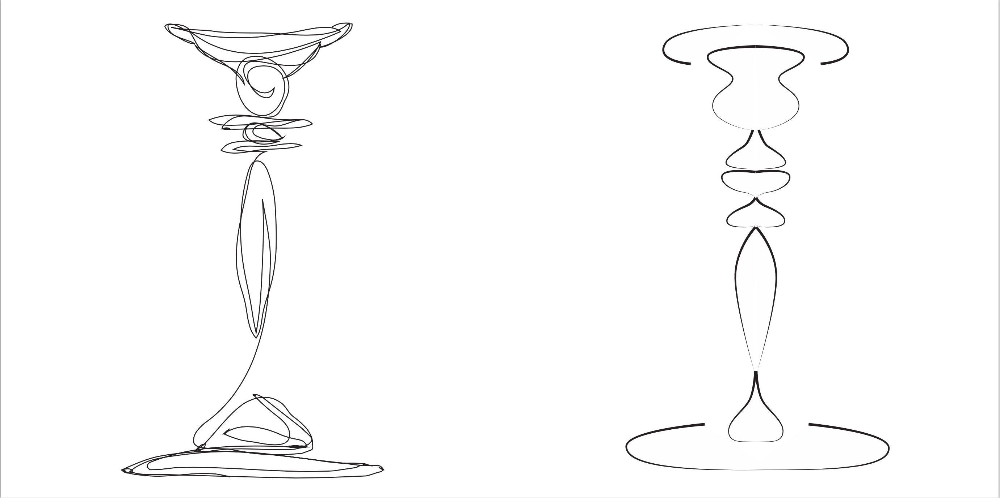
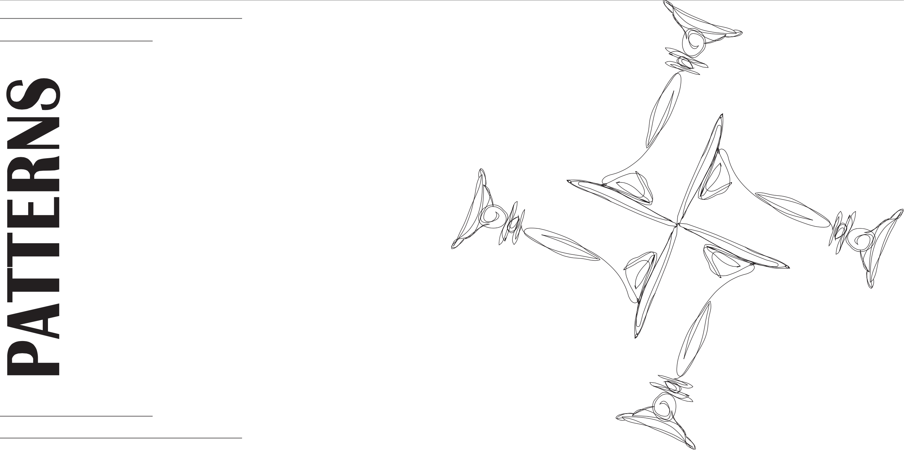
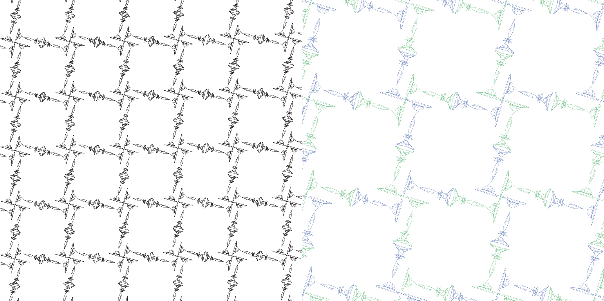

Click for Project Description
Close
A study of the form of a candlestick. After examining its shape and contours in detail for a long period of time, many different drawing of the form were created in different styles, yet in a way that was still indicative of its shape. The study drawings were then used to make a series of patterns, in both black and white and color.



